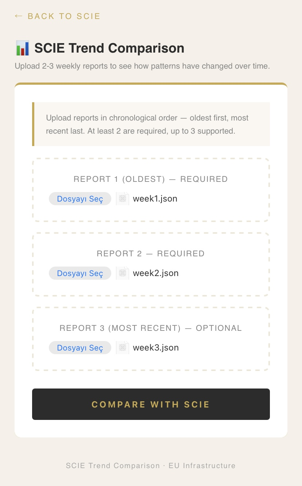

Traffic looked healthy. Conversions didn't follow. The question wasn't whether something was wrong — it was what, exactly, and where.
A Belgian e-commerce brand importing artisan products from İzmir — figs, olive oil, specialty pastries — had been running paid campaigns across three consecutive weeks. Margins are tight, as they are for most specialty importers. Every euro of ad spend matters. They turned to Sovereign Core.
We fed three weeks of operational data into SCIE Compare — Sovereign Core's internal AI comparison engine. No external models. No third-party data sharing. Everything within EU infrastructure.

The Intelligence Score
SCIE's intelligence score moved from 125 to 215 across the comparison period — an increase of 90 points. The direction: worsening. But the detail matters more than the number.

What Changed — Signal by Signal

SCIE's Recommendations
"One action. Three outcomes. Resolving the bot traffic problem simultaneously protects ad spend, cleans the signal, and reduces carbon cost."
The Governance Layer
Every recommendation in this report carries two notes: "Final decision: yours" and "SCIE never acts autonomously." This is not a disclaimer. It is a design principle.
SCIE is an advisory engine — it surfaces patterns, flags anomalies, and suggests interventions. The decision about what to act on, when, and how belongs entirely to the organisation using it.
Every signal, every recommendation, every comparison is logged in the audit trail with full traceability. You can view, export or delete any entry at any time.
SCIE runs entirely within EU infrastructure. No data is shared with external AI services.
What Three Weeks Revealed
The hidden cost wasn't invisible — it was unmeasured. Bot traffic eroding ad budget. Carbon accumulating silently. Stock pressure building without a campaign pause. Price disadvantage appearing unnoticed between reporting cycles.
SCIE Compare doesn't replace the marketing team. It gives them something to work with: a structured, auditable, weekly picture of what the data is actually saying — so the humans in the room can make better decisions.
I built this system on a phone, with zero budget, alone, from İzmir.
SCIE Compare, the signal detection layer, the governance architecture, the audit trail — every line of code is mine. Sovereign Core is not a portfolio piece. It is a working system, running now, built on EU infrastructure.
Sovereign Core and I are waiting to join the right team in Benelux or the Nordics. If data governance matters to your organisation — I would like to talk.
— Ceylan Belin, İzmir · June 2026Enter Sovereign Core →
sovereign.smyrnaandsable.com · lab.smyrnaandsable.com · linkedin.com/in/ceylan-belin · contact@smyrnaandsable.com